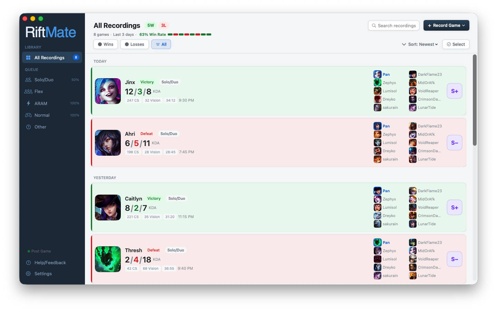
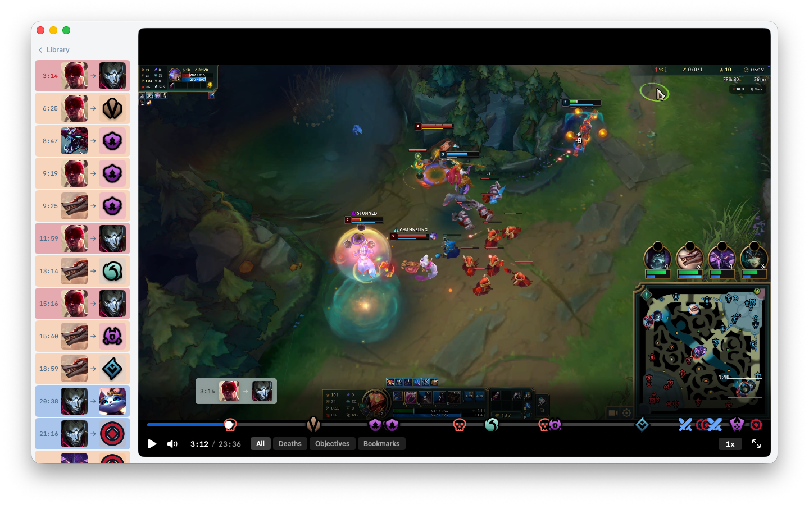

RiftMate automatically records your League of Legends matches on Mac and builds a timeline of every kill, death, and objective — so you can jump to any moment in seconds.


Built for League players who want to get better, not waste time.
RiftMate detects when you're in a game and records the whole thing. Solo/Duo, Flex, ARAM, Normals — pick which queues to capture.
Every kill, death, dragon, baron, herald, turret, and inhibitor on a synced timeline. Click any event to jump straight to that moment.
Press a hotkey during your game to drop a bookmark. Review your saved moments later without scrubbing through the whole replay.
All your games in one place, organized by date. Champions, KDA, result, and duration at a glance. Search and filter by queue or outcome.
Filter your timeline to only show deaths. The fastest way to figure out what's going wrong in your games.
Everything stays on your Mac. No accounts, no uploads, no cloud. Your replays are yours and yours alone.